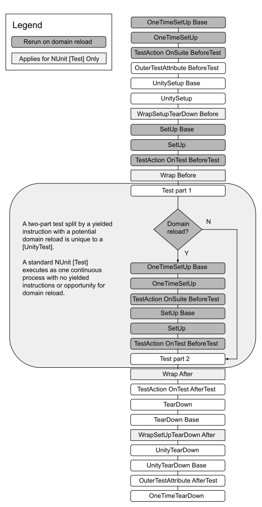

Actions outside of tests¶
When writing tests, it is possible to avoid duplication of code by using the SetUp and TearDown methods built into NUnit. The Unity Test Framework has extended these methods with extra functionality, which can yield commands and skip frames, in the same way as UnityTest.
Action execution order¶
The actions related to a test run in the following order:
Attributes implementing IApplyToContext
Any attribute implementing OuterUnityTestAction has its
BeforeTestinvokedTests with UnitySetUp methods in their test class
Attributes implementing IWrapSetUpTearDown
Any method with the [SetUp]) attribute
Action attributes have their
BeforeTestmethod invokedAttributes implementing IWrapTestMethod
The test itself runs
Action attributes have their
AfterTestmethod invokedAny method with the TearDown attribute
Tests with UnityTearDown methods in their test class
Any OuterUnityTestAction has its
AfterTestinvoked
The list of actions is the same for both Test and UnityTest.
Execution order flow¶

Note: Some browsers do not support SVG image files. If the image above does not display properly (for example, if you cannot see any text), please try another browser, such as Google Chrome or Mozilla Firefox.
Domain Reloads¶
In Edit Mode tests it is possible to yield instructions that can result in a domain reload, such as entering or exiting Play Mode (see Custom yield instructions). When a domain reload happens, all non-Unity actions (such as OneTimeSetup and Setup) are rerun before the code, which initiated the domain reload, continues. Unity actions (such as UnitySetup) are not rerun. If the Unity action is the code that initiated the domain reload, then the rest of the code in the UnitySetup method runs after the domain reload.